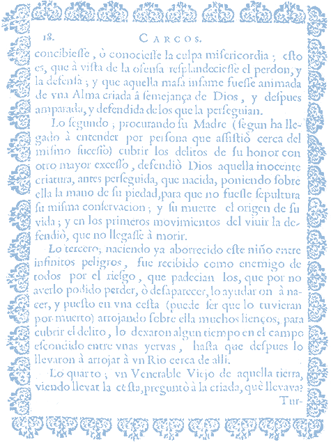
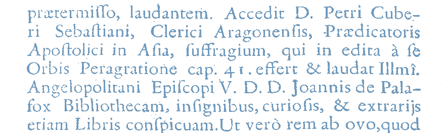

The books
Elegy Juan Boch (1555 - 1609), Secretary of the city of Antwerp, concerning the
Thesaurus Geographicus by Abraham Ortelio (1527 - 1598)
Ortelio, Abraham. Thesaurus Geographicus. Hanoviae: apud haeredes Guilielmi Antonii, 1611.
The Biblioteca Palafoxiana is one of the richest in printed material throughout Latin America; it contains 45.059 volumes, 3.023 unbound documents and 3.345 manuscripts.
It was founded in 1646, with the donation of 5,000 books from the personal library of the ninth bishop of Puebla, Juan de Palafox y Mendoza, it was located within the Tridentine Seminar for the education of priests; and it was also conceived as a public library, where anyone wishing to do so could study.
The Library is located in a complex of baroque-renaissance architecture, there, in 1773 the Bishop of Puebla, Francisco Fabian y Fuero, established the main nave: an orthogonal space with five vaults, illuminated by ten windows and their five balconies. Originally, the Library was equipped with two floors of fine Mexican white pine, coloyote and cedar bookshelves, divided into 824 cabinets covered with wire grilles Bishop Fabian y Fuero added his personal collection to that of Palafox y Mendoza.
The library represents the desire to collect and catalog the knowledge that has accompanied scholars of all times. A shelf full of books does not make you wise, it is necessary to read them, understand them and enjoy them; in other words, to live them. A library collects, organizes, and disseminates knowledge, making it accessible to the public.
In the XVI and XVII centuries libraries experienced major changes. In Europe the first public libraries appeared, such as the Bodleian Library in Oxford, the Biblioteca Ambrosiana in Milan, the one established by Augustinians in Rome and the Escorial in Madrid, which imposed a new model of order and query for the books, for example, the texts were placed in cupboards with railings and attached to the wall, unlike the Middle Ages, just to mention one case, where the books were stored in cabinets.
In vice regal America a passion for accumulating books for the education and delight of newcomers to the continent developed very quickly. The first books in New Spain arrived in private collections or as tools the friars used for spreading the Gospel.
At present, the Library is the only one in America that has preserved the original distribution and classification.
The altar
A beautiful altar made of onyx from Tecali is located along the back wall. This altar is dedicated to Our Lady of Trapani, who is represented in an oil painting.
“Don Juan de Ulloa and Castro who, in 1690 was 62 years old, narrated an interesting incident, according to which, on a certain occasion, [ …] this witness saw that the Blessed image, as if it were in relief, stuck her head out of the canvas and nodded to [Don Juan de Palafox], and then returned to the canvas as she had been before the action. After the incident, the Venerable Prelate prostrated himself on the ground and then asked the witness [what] he had seen. Palafox ordered him, under penalty of excommunication, to never say a word of what their eyes had seen during the Bishop's life, nor after his death.”
Declaration of Don Juan de Ulloa y Castro
Regular Angelopolitano Process of Don Juan de Palafox. Vatican Secret Archives, 1690
Fernandez Gracia, Ricardo. Don Juan de Palafox y Mendoza. Theory and Fostering of the Arts. Navarre: Association of Friends of the Monastery of Fitero, 2000
This sacred image was brought from Italy by Palafox y Mendoza and donated along with his personal library. In the painting one can see the Virgin holding the Child with her left arm. The Virgin is depicted with a serene face and her tunic and mantle are decorated with gold motifs. Beneath her there a scroll with an inscription in Latin which means "Mary Throne of Wisdom".
Above the Virgin, there is a painting on canvas of St Thomas Aquinas, who is represented with an image of a sun on his chest and a fountain pen in his hand. At the top of the altar there hangs a sculpture of the Holy Spirit, offering the gift of wisdom.
St Thomas Aquinas, the patron saint of Catholic schools and universities, was an Italian philosopher and theologian of the thirteenth century He is probably the greatest exponent of western medieval philosophy, he strove to join reason with faith, namely, the knowledge of God by means of revelation. He incorporated into a single system of philosophy and theology, the wealth of Greek thought, Sacred Scripture, the Fathers of the Church, as well as a certain aspect of Arab thought; he died on his way to the Second Council of Lyon, convened by the Pope in 1274.
On the finial of this altarpiece, the Angelic Doctor, so named due to his deep wisdom, has the following words about the Immaculate Conception written between his hands: “And such is the purity of the Blessed Virgin, that she has been immune to original and current sin".
The origin

On the lintel of the main door there is a statue of Don Juan de Palafox y Mendoza, a Spanish priest and the ninth bishop of Puebla, who held multiple positions in New Spain.
Juan de Palafox y Mendoza (1600 - 1659)
Of the special benefits that God gave to this sinner in his childhood,
before birth and then after he was born
Palafox y Mendoza, Juan de. The spiritual life of his Excellency, the Illustrious and Venerable Don Juan de Palafox y Mendoza. Seville: Don Miguel de Vergara, 1691
Juan de Palafox y Mendoza was born in Fitero, Navarre, on 24 June 1600. He was the son of the Marquis of Ariza Don Jaime de Palafox y Rebolledo, and Dona Ana Casanate. After being rejected by his mother, he was raised by Pedro Navarro and it was not until he was nine years old that he was recognized by his aristocratic father. His mother repented and provided for his livelihood. She was later admitted to the order of the Barefoot Carmelites, where she remained until her death.
Palafox lived his youth at court, surrounded by books and knowledge. He studied at the Universities of Huesca, Alcala and Salamanca. In 1629 he was ordained a priest. He traveled to several countries in Europe serving as chaplain of the sister of King Felipe IV. The confidence the crown had in him is what sent him to New Spain at the age of 40 to serve in various positions. He was Bishop of Puebla between 1640 and 1649, and Viceroy of New Spain in 1642. He was interested in education, defended justice and good government. He believed in books as an essential tool for priests and also for the development of the people. He was particularly interested in politics, and collaborated in the drafting of the Laws of the Indies. In the education of seminarians he included the learning of indigenous languages and actively participated in the education of indigenous people.
In Puebla he had temples, shrines, altars, schools, hospitals, and Episcopal residences built, in addition to the cathedral that he personally consecrated. However, during his life, according to Palafox himself, he was accused of alleged flaws, payments of tithes and of seeking to reduce the influence of certain religious orders such as the Jesuits.
The Bishop wanted to die in Puebla, however, he died on October 1, 1659 in the city of Osma, Spain. His cenotaph, a funerary monument erected in his memory, is located in the Cathedral of Puebla. Today, his mortal remains lie in the cenotaph, after being brought to Puebla on June 22, 2011, the year of his beatification.
With a passion akin to that of Palafox, in 1771, the Bishop of Puebla, Francisco Fabian y Fuero, also donated his personal library to increase the archives of the Palafoxiana. Additionally, Don Francisco played an important part in having a large number of volumes in the Jesuit libraries become part of the collection.
Don Francisco Fabian y Fuero was born in Terzaga, Spain, in 1719. He studied philosophy with the Carmelites of Calatayud and theology in Alcalá de Henares. He obtained a bachelor's degree in 1743 and a doctorate in 1744. In the year 1765, King Carlos III, granted him the title of Bishop of the city of Puebla de Los Angeles, a position he held until 1773. During this period, Fabian y Fuero ordered that the Library be decorated to achieve its transformation into a true work of art. During his tenure the first two levels of cedar bookshelves were built, with a capacity for 20,000 volumes, proving to be an exemplary work of cabinetmaking.
Francisco Fabian y Fuero was a tenacious individual, an excellent speaker, a reformer and a passionate advocate of the monarchy, ecclesiastical and Episcopal law; he died in Torrehermosa, Spain, in 1801, at the age of 81.
The archives
The Hebrews flee Egypt in search of the Promised Land
Biblia Sacra hebraice, chaldaice, graece & latine, tomo I. Antverpiae: Christoph. Plantinus excud., 1569-1573
The Biblia Regia or Polyglot Bible of Antwerp is an eight volume edition containing the text of the Scriptures in Hebrew, Aramaic, Greek and Latin. It was edited by Benito Arias Montano, and printed in Antwerp between 1569 and 1573. The Biblioteca Palafoxiana houses the complete collection of this important text.
As in all libraries of seminarian character, in addition to the volumes of scholastic and moral theology, sacred history, canon law, Liturgy, Fathers and Doctors of the church, Bibles are the central part and of the greatest importance in the archives.
Also housed here are books that have changed the course of humanity due to the knowledge they contain, for example: dictionaries, classic books on science, geography, ancient literature, grammar books and even titles considered profane. Also, here you can find incunabula, a name given to the books printed since the birth of the printing press up until the year 1500.
A book houses more information than what is printed in it. To discover it, it is necessary to hold the book in your hands, feel it, observe it, and become familiar with it, for example, the texture and the shape of the binding. Ancient books are distinguished by being handmade. Each sheet was sewn with thread to the spine in the center fold and these threads were fixed to the cover.
Books were usually covered with leather and cardboard or vellum, which is a type of parchment made from a thin layer of treated leather which was used in the middle Ages.
The first books were written by hand. When printing appeared, movable type and typography were used, depending on each producer and his publishing house. The use of capital letters is notable in ancient books, as they are proportionally much larger than the other words, and they are used for the first word of each chapter or paragraph. Some are ornamented and possess images within them to facilitate the location of a certain passage. Between the invention of the printing press and the year 1500, the printing of the books called incunabula began.
In accordance with western tradition, the structure of ancient books consisted of the cover, where the most comprehensive information on the work can be found: author, title, engravers, edition, printer; and the text, the important part of the book, which can be divided into volumes, chapters, etc. Depending on the year, edition and content type, books may also have a cover page, colophon, index, frontispiece and elements of iconography, key elements of its identification.
Books contain other life marks that provide information about the people who owned them. One of them is a fire mark that was placed mainly on the edges by means of hot irons, bearing a figure, shield or name. There are also the proprietary marks, called ex libris, which could be any image representative of the personality of the owner and his name, in addition to some motto in Latin.
The Library
The Palafoxiana appears small compared to the universe of knowledge it holds. We must consider that a library is much more than the building and the books found there. In order for it to work properly great organization is necessary. The Palafoxiana Library has been well-regulated since its foundation in the seventeenth century. In the eighteenth century regulations were written, of which one of the clauses reads:
XVIII It will be very important and we order that the librarians take care of picking up the papers, sermons, and other items, which are often printed in the Kingdom; because it has been observed that after a while nothing can be found and all these things occur in a country that does not yet known its full story, and learning the full story is something which some of these works can lead to. Therefore everything will be put away in the cupboards, or drawers, and the librarians will make sure that when enough papers form a competent body, that they be bound and that any other handwritten documents, or documents written in the symbols of the Indians, be stored as may be the case.
Ordinances for the use of the Biblioteca Palafoxiana, 1763
Fabian y Fuero, Francisco. Ordinances for the use of the Biblioteca Palafoxiana, in: Artes de Mexico: Artes de Mexico magazine, 2003
In his first few days in office Bishop Juan de Palafox y Mendoza established that the care of the books would be the responsibility of the designated librarian or the rector of the colleges of Trent. Later, Bishop Fabian y Fuero, concerned about the permanence and preservation of the library, wrote a set of rigid regulations. These regulations established timetables for housekeeping, queries, and so on.
Although it was public and open, at that time, and even today, external borrowing is unthinkable. The penalty, for anyone who extracted a book, was immediate excommunication, dictated by the Pope.
In the end, those standards were wise, because the library has remained almost intact until our days, after so many years, consultation is still permitted and it can also be visited.
It should be noted that since its inception, the library has continued to receive donations and has accumulated more volumes. In 1772, in addition to other special collections, it received the books from the libraries of the Jesuit colleges in Puebla, after they were expelled from Mexico in 1767 by order of King Charles the III.
Almost a century later, the library was part of the nationalization of church property along with the Tridentine seminars. In 1861 it passed into the hands of the government as a product of Reform legislation.
In 1862, after the reforms made by President Juárez, the Palafoxiana opened its doors as a Public State Library, preserving its entire structure.
The Library has survived the ravages of nature and men. Over the centuries it has withstood earthquakes and various military movements such as the French intervention in 1862 and the Mexican Revolution in 1910. This is why its permanence to today is considered without a doubt a posthumous achievement of Palafox´s.
In 1974 the Casa de la Cultura or House of Culture was inaugurated in the city of Puebla, which generated a cleaning and restoration process of the Library. In 1981, the library closed its doors to public consultation after being declared "National Historical Heritage". In 2005, after a long period of restoration, rescue and cataloging the Biblioteca Palafoxiana was registered in UNESCO's "Memory of the World" program as the first public library on the American continent.
One of the essential characteristics of a library is to preserve the information that is safeguarded within it for its dissemination. In the case of ancient books, it is not only important information, but the object itself becomes a record of the evolution of historical editorial techniques and their safeguarding process.
The main factors that put the preservation of the heritage of a library at risk are the environment, physical use, a lack of prevention and protection against disasters in addition to security against theft, as well as vandalism.
Currently, to prevent the destruction and loss of these valuable books, the library is fitted with glass with UV protection, and each week it is inspected by specialists for cleaning and a diagnosis of the heritage. There are also regular disinfection periods for the materials, as the archive materials are mostly of organic origin, and because of this they are subject to aging due to environmental factors.
The instruments

Musurgia universalis, 1650
Kircher, Athanasius. Musurgia universalis. Rome: typis Ludovici Grignani, 1650
For the understanding and application of the knowledge housed in the vast collections of the Biblioteca Palafoxiana, in addition to bequeathing his personal library, he also bequeathed a series of instruments that complement the site's heritage.
"Two globes (celestial and terrestrial) a yard and half of high; a stone-magnet, a steel mirror for starting fires, a box covered with black velvet from Castille full of mathematical instruments and compasses with two sectors and a small sphere inside and two astrolabes, a Jacob's staff to measure the height of the sun, and the stars ... maps and charts and other fixed instruments and paintings, that we could put in the library if we chose to do so"
Palafox y Mendoza, Juan de. Donation of my Lord Bishop Don Juan de Palafox y Mendoza from his library, Puebla, 1646. Puebla: Ministry of Culture, 1998.
Also, the bibliographical heritage grew significantly with donations from Bishop Fernandez de Santa Cruz, Rector Don Francisco Irigoyen and Bishop Vázquez. It was approximately between 1708 and 1721 that Bishop Pedro Nogales Davila donated six tables made of Tecali and marquetry, which are still preserved at the site.
Palafox y Mendoza brought ideas about a modern civilization from Europe. Therefore, he emphasized the importance of public library as a means of acquiring culture. As additional data, in 1627 famous librarian Gabriel Naudé published the treatise about library organization, where he promotes that it must "be devoted to public use, and communication should never be denied to the simplest of men who might require it", Palafox seemed to meticulously follow this advice.
The Research room

In the Eighteenth Century, the rector of the Cathedral of Alicante, Manuel Martí, offended Mexican genius of the period when he wrote in one of his letters that there were no schools, no libraries, nor learned men in New Spain. The Mexican "Enlightened", led by intellectual Juan José de Eguiara, took over the task of identifying all the names of men and women born or living in Mexico, who had contributed to the advancement of the arts and sciences with their books. The result was a monumental work entitled La Bibliotheca Mexicana. In the first volume of this work the following allusion to the Palafox Library appears:
La Bibliotheca Mexicana, 1754
Eguiara and Eguren, Juan José de. Mexican Library Mexici: ex nova typographia in aedibus authoris editionis ejusdem Bibliothecae, 1755
Without a doubt, physical contact with books is very relevant for different types of research, so that at the moment, the Palafoxiana Library also works as a Research Center, with the purpose of providing researchers and academics throughout the world, the book collections which it protects, catalogs and studies to safeguard the heritage of the written culture. Additionally, through various means such as digitalization, it brings knowledge to the public without compromising the conservation of the books.
The Palafoxiana Library is a museum at the same time, since it performs the important task of registration, inventory and conservation of the books it protects; and additionally, it allows visitors to have access to the universe of ancient books.
With a renewed impetus, the Palafoxiana Library continues with its mission of researching and disseminating universal knowledge, through the publication of different materials written by specialists. On one hand, information guides are available for visitors, such as the brief text Brief Historic Note of the Palafoxiana Library and its Founder, which contains interesting data on the heritage that the Library houses. On the other hand, there are research publications such as Textos Hebraicos or Vivitur Ingenio; and even, facsimile editions of important samples of the bibliographical collection such as Magneticum Naturae Regnum by Athanasius Kircher, a title that the author dedicated in 1667 to Alejandro Fabian , a theologian, philosopher and mathematician born in Puebla. In this book, the author presents his theory about the attraction and repulsion of Nature not only as physical forces, but based on discord and friendship. Another facsimile publication available is a book of poems called Poesías Lyricas y Jocoserias by Joseph Joachin Benegasi, printed in Madrid in 1743. In this book there is a variety of literary compositions that include sonnets, ballads and "seguidillas", which are characterized by their satirical tone.
In the visitors service center at the Library, these and other publications can be purchased.